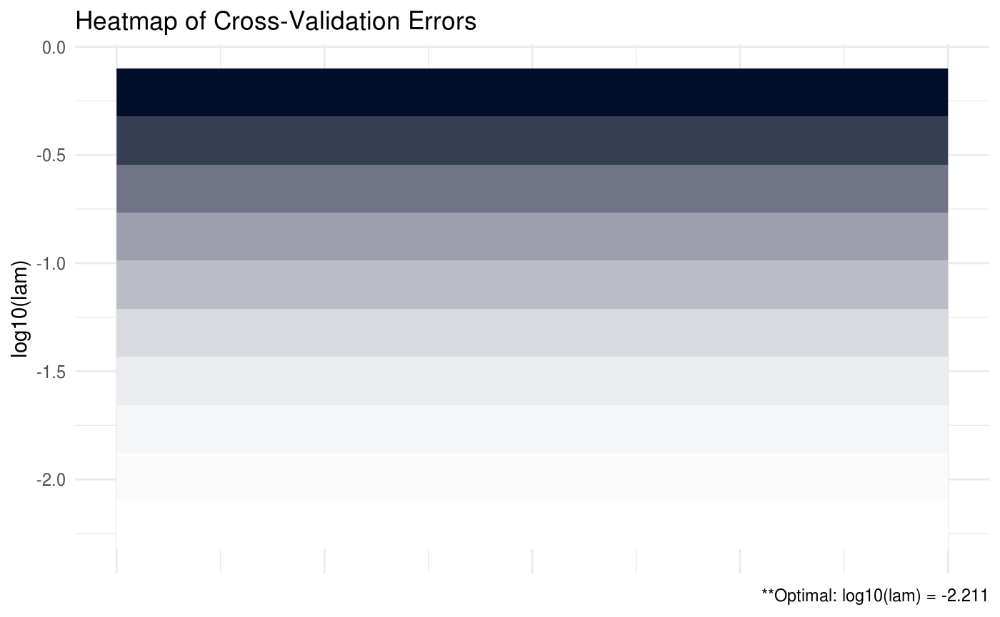
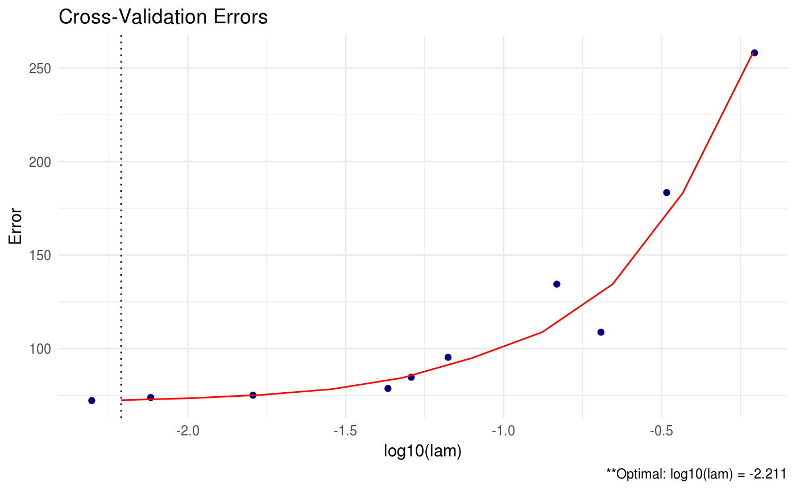
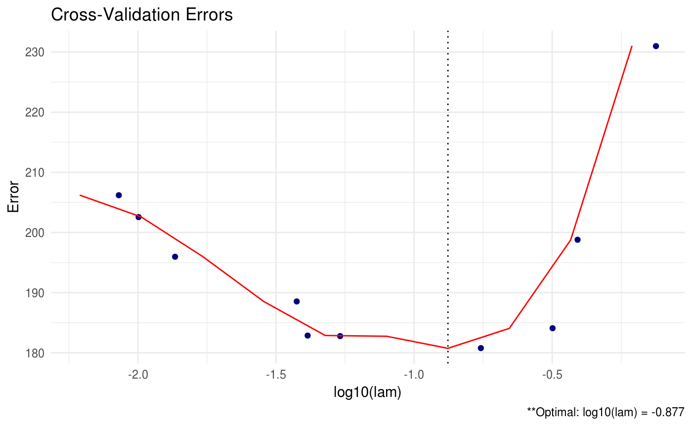
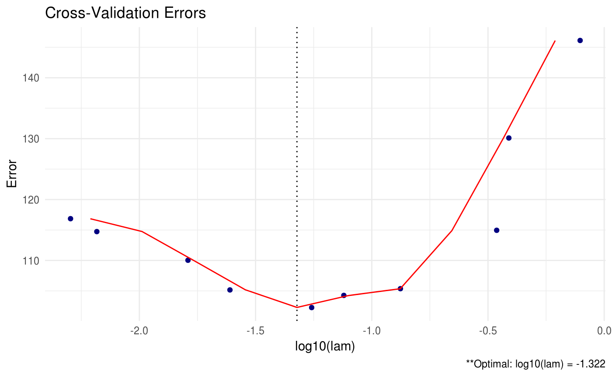

In many statistical applications, estimating the covariance for a set of random variables is a critical task. The covariance is useful because it characterizes the relationship between variables. For instance, suppose we have three variables \(X, Y, \mbox{ and } Z\) and their covariance matrix is of the form
\[ \Sigma_{xyz} = \begin{pmatrix} 1 & 0 & 0.5 \\ 0 & 1 & 0 \\ 0.5 & 0 & 1 \end{pmatrix} \]
We can gather valuable information from this matrix. First of all, we know that each of the variables has an equal variance of 1. Second, we know that variables \(X\) and \(Y\) are likely independent because the covariance between the two is equal to 0. This implies that any information in \(X\) is useless in trying to gather information about \(Y\). Lastly, we know that variables \(X\) and \(Z\) are moderately, positively correlated because their covariance is 0.5.
Unfortunately, estimating \(\Sigma\) well is often computationally expensive and, in a few settings, extremely challenging. For this reason, emphasis in the literature and elsewhere has been placed on estimating the inverse of \(\Sigma\) which we like to denote as \(\Omega \equiv \Sigma^{-1}\).
glasso is a popular R package which estimates \(\Omega\) extremely efficiently using the graphical lasso algorithm. CVglasso is designed to build upon this package and allow for further flexibility and rapid experimentation for the end user.
We will illustrate this with a short simulation.
Let us generate some data.
library(CVglasso)
# generate data from a sparse matrix
# first compute covariance matrix
S = matrix(0.7, nrow = 5, ncol = 5)
for (i in 1:5){
for (j in 1:5){
S[i, j] = S[i, j]^abs(i - j)
}
}
# generate 100 x 5 matrix with rows drawn from iid N_p(0, S)
set.seed(123)
Z = matrix(rnorm(100*5), nrow = 100, ncol = 5)
out = eigen(S, symmetric = TRUE)
S.sqrt = out$vectors %*% diag(out$values^0.5) %*% t(out$vectors)
X = Z %*% S.sqrt
# snap shot of data
head(X)## [,1] [,2] [,3] [,4] [,5]
## [1,] -0.4311177 -0.217744186 1.276826576 -0.1061308 -0.02363953
## [2,] -0.0418538 0.304253474 0.688201742 -0.5976510 -1.06758924
## [3,] 1.1344174 0.004493877 -0.440059159 -0.9793198 -0.86953222
## [4,] -0.0738241 -0.286438212 0.009577281 -0.7850619 -0.32351261
## [5,] -0.2905499 -0.906939891 -0.656034183 -0.4324413 0.28516534
## [6,] 1.3761967 0.276942730 -0.297518545 -0.2634814 -1.35944340We have generated 100 samples (5 variables) from a normal distribution with mean equal to zero and an oracle covariance matrix \(S\).
## [,1] [,2] [,3] [,4] [,5]
## [1,] 1.0000 0.700 0.49 0.343 0.2401
## [2,] 0.7000 1.000 0.70 0.490 0.3430
## [3,] 0.4900 0.700 1.00 0.700 0.4900
## [4,] 0.3430 0.490 0.70 1.000 0.7000
## [5,] 0.2401 0.343 0.49 0.700 1.0000## [,1] [,2] [,3] [,4] [,5]
## [1,] 1.96078 -1.37255 0.00000 0.00000 0.00000
## [2,] -1.37255 2.92157 -1.37255 0.00000 0.00000
## [3,] 0.00000 -1.37255 2.92157 -1.37255 0.00000
## [4,] 0.00000 0.00000 -1.37255 2.92157 -1.37255
## [5,] 0.00000 0.00000 0.00000 -1.37255 1.96078It turns out that this particular oracle covariance matrix (tapered matrix) has an inverse - or precision matrix - that is sparse (tri-diagonal). That is, the precision matrix has many zeros.
In this particular setting, we could estimate \(\Omega\) by taking the inverse of the sample covariance matrix \(\hat{S} = \sum_{i = 1}^{n}(X_{i} - \bar{X})(X_{i} - \bar{X})^{T}/n\):
# print inverse of sample precision matrix (perhaps a bad estimate)
round(qr.solve(cov(X)*(nrow(X) - 1)/nrow(X)), 5)## [,1] [,2] [,3] [,4] [,5]
## [1,] 2.32976 -1.55033 0.22105 -0.08607 0.24309
## [2,] -1.55033 3.27561 -1.68026 -0.14277 0.18949
## [3,] 0.22105 -1.68026 3.19897 -1.25158 -0.11016
## [4,] -0.08607 -0.14277 -1.25158 2.76790 -1.37226
## [5,] 0.24309 0.18949 -0.11016 -1.37226 2.05377However, because \(\Omega\) is sparse, this estimator will likely perform very poorly. Notice the number of zeros in our oracle precision matrix compared to the inverse of the sample covariance matrix. Instead, we will use CVglasso to estimate \(\Omega\).
By default, CVglasso will estimate \(\Omega\) using a lasso penalty (like glasso) but choose the optimal lam tuning parameters using k-fold cross validation.
##
##
## Call: CVglasso(X = X, trace = "none")
##
## Iterations:
## [1] 3
##
## Tuning parameter:
## log10(lam) lam
## [1,] -1.544 0.029
##
## Log-likelihood: -110.16675
##
## Omega:
## [,1] [,2] [,3] [,4] [,5]
## [1,] 2.13225 -1.24667 0.00000 0.00000 0.18710
## [2,] -1.24669 2.75120 -1.29907 -0.07345 0.00000
## [3,] 0.00000 -1.29915 2.81735 -1.15679 -0.00114
## [4,] 0.00000 -0.07339 -1.15673 2.46461 -1.17086
## [5,] 0.18707 0.00000 -0.00116 -1.17087 1.86326CVglasso also has the capability to provide plots for the cross validation errors. This allows the user to analyze and select the appropriate tuning parameters.
In the heatmap plot below, the more bright (white) areas of the heat map correspond to a better tuning parameter selection.
##
## Optimal tuning parameter on boundary... consider providing a smaller lam value or decreasing lam.min.ratio!
We can also produce a line graph of the cross validation errors:

CVglasso contains a number of different criteria for selecting the optimal tuning parameters during cross validation. The package default is to choose the tuning parameters that maximize the log-likelihood (crit.cv = loglik). Other options include AIC and BIC.


This allows the user to select appropriate tuning parameters under various decision criteria. We also have the option to print all of the estimated precision matrices for each tuning parameter combination using the path option. This option should be used with extreme care when the dimension and sample size is large – you may run into memory issues.
# keep all estimates using path
CV = CVglasso(X, path = TRUE, trace = "none")
# print only first three objects
CV$Path[,,1:3]## , , 1
##
## [,1] [,2] [,3] [,4] [,5]
## [1,] 2.27654853 -1.4551126 0.11834795 -0.03362537 0.22605074
## [2,] -1.45502902 3.1160342 -1.54996573 -0.14471300 0.14454795
## [3,] 0.11829613 -1.5498807 3.09654742 -1.22833562 -0.08600491
## [4,] -0.03364185 -0.1447375 -1.22832982 2.69276569 -1.31850656
## [5,] 0.22608587 0.1445209 -0.08600744 -1.31850616 2.00326537
##
## , , 2
##
## [,1] [,2] [,3] [,4] [,5]
## [1,] 2.2459221527 -1.3976068 0.05510377 -0.0006195454 0.21440520
## [2,] -1.3976648282 3.0204804 -1.47216066 -0.1450969643 0.11687550
## [3,] 0.0551403532 -1.4721857 3.03656852 -1.2149094526 -0.07081037
## [4,] -0.0006041268 -0.1451174 -1.21491342 2.6464677275 -1.28533833
## [5,] 0.2143915626 0.1169227 -0.07083231 -1.2853368693 1.97235327
##
## , , 3
##
## [,1] [,2] [,3] [,4] [,5]
## [1,] 2.2011218 -1.31902807 0.00000000 0.0000000 0.21422602
## [2,] -1.3190416 2.88781599 -1.38167272 -0.1138091 0.06185739
## [3,] 0.0000000 -1.38169822 2.94863905 -1.1948324 -0.04311665
## [4,] 0.0000000 -0.11378475 -1.19485590 2.5742727 -1.23897273
## [5,] 0.2142455 0.06181846 -0.04309309 -1.2389732 1.92899137A huge issue in precision matrix estimation is the computational complexity when the sample size and dimension of our data is particularly large. There are a number of built-in options in CVglasso that can be used to improve computation speed:
lam values during cross validation. The default number is 10.K folds during cross validation. The default number is 5.tol option. The default for each is 1e-4.